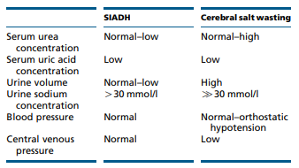

Hyponatraemia is all about ADH typically
Isothenuria normal in aging and in AKI/CKD.
Hypotonic hyponatraemia requires treatment (probably), so confirm a pOSM if possible.
k+ is oncotic too ( and can buffer NA) - 20mmol/KCL = 40ml 3% NaCL - may overcorrect if not aware!
Urine Na: >30 mmol/l urinary Na = dry (NB low [Na] diet, diuretics, CKD - poor reabsorbtion (and impaired free water clearance too))
Urine Osm: <100 mmmol/L = appropriately dilute. 100 - serum osm = grey area.
Non-hypotonic (hyperglycaemia, mannitol, hypertonic radiocontrast,pseudohyponatreamia) - conservative Rx
6*(Totalbodywater+1)/(513-initial NA) = total volume - boluses already given. Divide by hours (typically 4). HDU and monitor every 4-6
Risks: Female, hypokalaemia, chronicity, alcoholism, cirrhosis, malnourishment.
Triglycerides, cholesterol, or protein
This translates into adding 2.4 mmol/l to the measured serum sodium concentration for every 5.5 mmol/l (100 mg/dl) incremental rise in serum glucose concentration above a standard serum glucose concentration of 5.5 mmol/l (100 mg/dl). (Ive seen this as 1.6mmol/L also)
Useful conceptually (in chronic state), not very quantitativly, and inconvienient outside ITU
Calculation
cH2O = uV - (uOsm x uV)/pOsm
where cH2O = Free Water Clearance
Interpretation
Free Water Clearance positive
Urine less concentrated than plasma
Decreased Antidiuretic Hormone (ADH) Free Water Clearance negative
Urine is more concentrated than plasma
Increased Antidiuretic Hormone (ADH)
SIADH is pretty rare. Be suss.
Essential criteria
Effective serum osmolality >275 mOsm/kg
Urine osmolality >100 mOsm/kg at some level of decreased effective osmolality
Clinical euvolaemia
Urine sodium concentration >30 mmol/l with normal dietary salt and water intake
Absence of adrenal, thyroid, pituitary or renal insufficiency
No recent use of diuretic agents
Supplemental criteria
In DI: If intravenous saline solution is administered and desmopressin is withheld at the same time, rapid changes in serum sodium levels may result, which puts the patient at risk for demyelinating lesions.
DDAVP Clamp: Desmopressin is also used to minimize water excretion during the correction of hyponatremia during water diuresis. When treating hyponatremia, clinicians should monitor closely to avoid free-water diuresis. To prevent ongoing water losses in urine and overly rapid “autocorrection” of serum sodium level, desmopressin can be given to reduce free-water losses.
Overcorrection Panic HDU/ITU-> DDAVP, 2 micrograms IV q8hr & H20
Clamp protocol:
Contraindications to clamp
DDAVP dose:
SC desmopressin at 2-4 mcg every 8-12 hours or intranasal desmopressin, 20 μg, every 12 hours
The hourly urine output should decrease substantially in the first 1 to 2 hours after administration.
Urine osmolality should be checked to ensure that urine osmolality has increased; 500- to 600-mOsm/kg range = significant antiaquaretic effect.
Not on European guidelines, no real well established role here. no RCT and hypernatreamia/osmotic demyelination risk. Avoid.
Only in SIADH, ensure not volume deplete. A bit niche, most evidence from ITU.
58 patients at University of Pittsburgh Medical Center
Free water deficit calculator. Thats basically it. No such things as pseudohypernatreamia.
To excrete concentrated water ( i.e. not loose free water and push up your Na) a medullary concentration gradiant,ADH & responsive kidney (lithium/DI etc)
Intake: drinking the ocean, hypertonic saline, primary hyperaldo
If not thirsty - hypothalamic lesion?
In patients with polyuria, diabetes insipidus is very unlikely if urine osmolality is >700 mOsmol/kg
nephrogenic - lithium, hypercalcamia hypoK, medullary cystic disease, sickle cell, ceongentical, post obstructive
Central - trauma, surgery, invasive, booze
Give 2-4 mcg ddavp SC and monitor uOSM & vol every 30 mins for 2 hours. if Uosm increases = concentrating urine = responding = central. can be blunted due to chronic washout if longstanding ( and thus harder to coentrated due to loss of gradiant). should increment by 50% to outrule nephrogenic.

May have high urinary Cl-
Paradoxical role for HCTZ
NSAIDs may help by reducing reducing the diuretic effect of renal prostaglandins
Evidence for restriction, especially in people with a reasonable intake is pretty weak - K+ is likely more important
low salt dietary intervention in self reportedly low intake population with limited baseline info
TLDR: poorly executed study, stopped due to futility. Probably no role for intensive dietary intervention in pateints with reasonable sodium intake.